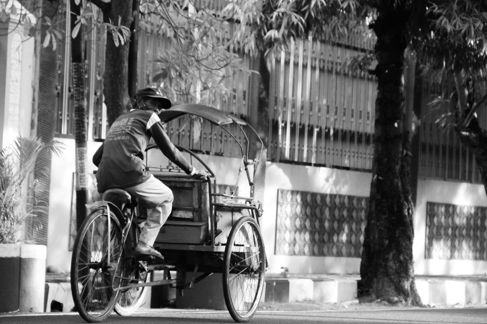
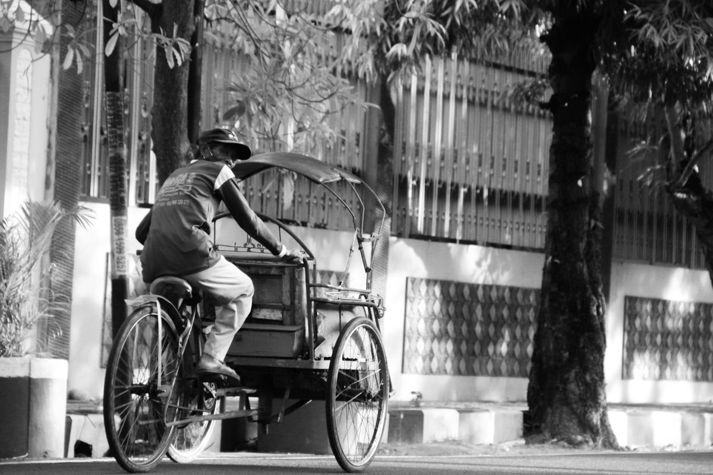

Warisan budaya Yogyakarta mencerminkan nilai luhur, tradisi, dan identitas masyarakat Jawa.
 


Batik Yogyakarta memiliki corak khas dengan warna-warna klasik seperti coklat soga dan indigo. Motif batik Yogyakarta mencerminkan filosofi kehidupan Jawa.
Seni pertunjukan tradisional yang menggunakan boneka kulit dengan dalang sebagai penggerak dan pencerita. Diakui UNESCO sebagai Masterpiece of Oral and Intangible Heritage.
Ansambel musik tradisional Jawa yang terdiri dari berbagai instrumen seperti gong, kenong, dan saron. Dimainkan untuk memperingati Maulid Nabi Muhammad SAW dalam acara adat Sekaten.

Tarian sakral Keraton Yogyakarta yang dibawakan sembilan penari wanita, melambangkan spiritualitas, mitos Ratu Kidul, dan ajaran hidup dengan gerakan penuh makna dan simbolis yang menggambarkan kehidupan manusia.

Makanan khas Yogyakarta berbahan dasar nangka muda (gori) dimasak lama dengan santan dan gula jawa hingga manis gurih, berwarna coklat dari daun jati.
Tradisi tahunan Keraton Yogyakarta untuk memperingati Maulid Nabi Muhammad SAW yang sarat nilai budaya, yang ditandai dengan keluarnya Gamelan Pusaka dari Keraton ke Masjid Gede Kauman.
Bakpia Pathok merupakan oleh-oleh khas Yogyakarta berbentuk kue kecil dengan isian kacang hijau, cokelat, keju, atau kumbu hitam. Kuliner ini berkembang sejak awal abad ke-20.

Sate Klathak adalah sate kambing khas Yogyakarta yang unik karena hanya dibumbui garam dan dipanggang menggunakan jeruji besi, menghasilkan cita rasa daging yang khas.
Tiwul merupakan makanan tradisional berbahan dasar singkong yang berasal dari Gunungkidul. Dahulu menjadi makanan pokok, kini tiwul dikenal sebagai kuliner khas bernilai budaya.